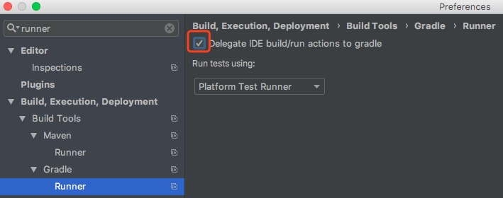

1. 设置数据库存储时间的时区
如果某个应用考虑到国际化，服务会部署在多个时区，或者用户会和不同时区的人打交道；存储的时间建议使用 UTC 时间。比如美国有夏令时，会根据季节调整时间。使用 UTC 时间会更好地适应变化。
Hibernate 在时间的存取的时候，会调用PreparedStatement.setTimestamp()/ResultSet.getTimestamp，默认情况下，会 fall back 为 JVM 所在的时区。为了能够存储 UTC 时间，将 JDBC 的链接时区设置为 UTC 即可。即spring.jpa.properties.hibernate.jdbc.time_zone=UTC。
需要注意的是，对于 MySQL 数据库，在连接 URL 上要添加上useLegacyDatetimeCode=false，否则会导致时间并不会被转换为 UTC 时间。
当然，如果服务的时区是稳定的（比如固定在东八区），存储为服务当前时间服务也可以正常工作。
2. 检查生成的 SQL 是否与预期中的一致
在查询、更新、删除记录的时候，一并检查生成的 SQL 是否与预期一致，可以在早期发现并解决潜在的性能问题。
JPA 开启打印日志的设置:
spring.jpa.show-sql=true
spring.jpa.properties.hibernate.type=trace
spring.jpa.properties.hibernate.use_sql_comments=true
spring.jpa.properties.hibernate.format_sql=true
logging.level.org.hibernate.type.descriptor.sql=trace
logging.level.org.hibernate.SQL=trace打印日志还可以比较早地发现 N+1查询问题。
注意：仅在非生产环境打印SQL。
如何懒加载某个属性
使用代码增强，并在属性上添加相应的注解：
@Lob
@Basic(fetch = FetchType.LAZY)
public byte[] getPicture() {
return picture;
}特点：
- 在使用的时候，会额外产生一条查询的 SQL
- 代码增强会修改原来的代码，做一些处理
需要注意的是：懒加载属性懒加载生效的前提是，没有 eager load 的关联；如果存在的话，注解失效。
使用子类
@MappedSuperclass
public class BaseAttachment {
@Id
@GeneratedValue
private Long id;
private String name;
}
@Entity
@Table(name = "attachment")
public class AttachmentSummary extends BaseAttachment {}
@Entity
@Table(name = "attachment")
public class Attachment extends BaseAttachment {
@Lob
private byte[] content;
}特点：
- 无侵入性代码，性能会更好
- 调用者需要对子类要有意识
实现 equals/hashCode/toString 方法
equals/hashCode
equals 用于比较两个对象是否相等，重载时要遵守：
- 自反性：对于任何非null的引用值x, x.equals(x)必须返回true
- 对称性：对于任何非null的引用值x和y,当且仅当y.equals(x)返回true时，x.equals(y)必须返回true
- 传递性：对于任何非null的引用值x,y和z，如果x.equals(y)返回true，并且y.equals(z)返回true，那么x.equals(z)返回true
- 一致性: 对于任何非null的引用值x和y，只要equals的比较操作在对象中所用的信息没有被修改，多次调用x.equals(y)就会一致地返回 true，或者一致地返回false
- 非null 引用与 null 比较，永远返回false
hashCode 主要用于对象存储在 Hash 相关的存储模型，提供散列计算。
如果两个对象 equals，那么 hashCode 必然要相等。不同对象 hashCode 最好不要相同，尤其在数据量较大的时候。
考虑到实体的特性，实体一般都有标识符字段，它的来源有：
- 分配的（比如 UUID/ISBN/ID number)等
- DB生成
对于前者，可以直接使用分配的标识符作为 equals/hashCode 的关键要素:
@Override
public boolean equals(Object o) {
if (this == o) return true;
if (!(o instanceof Book)) return false;
Book book = (Book) o;
return Objects.equals(getIsbn(), book.getIsbn());
}
@Override
public int hashCode() {
return Objects.hash(getIsbn());
}对于后者，需要这样做：
@Override
public boolean equals(Object o) {
if (this == o) return true;
if (!(o instanceof Book)) return false;
Book book = (Book) o;
return id != null && id.equals(book.id);
}
@Override
public int hashCode() {
return 31;
}大家会发现 hashCode 永远返回31，使用固定值的原因是： 如果使用下面的代码:
@Override
public boolean equals(Object o) {
if (this == o) return true;
if (!(o instanceof Book)) return false;
Book book = (Book) o;
return id != null && id.equals(book.id);
}
@Override
public int hashCode() {
return Objects.hash(getId());
}因为 ID 是在持久化之后，由数据库分配的；如果在持久化之前，他们是存储在一个 HashSet 中，入库之前，它的 hashCode 是 0；持久化之后，它的值发生了改变，HashSet 就不会包含当前的实体了。
toString
toString 不建议包含关联实体。
如果关联是 Eager 加载的，容易引起性能问题（子实体关联的子实体，形成链式的查询)；如果关联是 Lazy加载的，会抛出：LazyInitializationException 异常。
如果主键是 UUID
将id的类型设置为 UUID 即可,另外需要确保 GeneratedType 为AUTO:
@Entity(name = "Post")
@Table(name = "post")
public class Post {
@Id
// @GeneratedValue 默认策略为 GenerationType.AUTO
@GeneratedValue
private UUID id;
}如果想自定义其它 ID 生成策略，可以参考 hibernate 的 UserGuide，里面有简单的例子可以参考。
自增主键的生成策略
Hibernate 5之前，可以使用:
@Entity(name = "Post")
@Table(name = "post")
public class Post {
@Id
@GeneratedValue(strategy = GenerationType.AUTO)
private Long id;
}自 Hibernate 5之后，MySQL需要调整为
@Entity(name = "Post")
@Table(name = "post")
public class Post {
@Id
@GeneratedValue(strategy = GenerationType.IDENTITY)
private Long id;
}AUTO 会 fall back 为性能差的 TABLE 生成器，需要显式声明为 IDENTITY。
检查生成的 SQL 是否与预期中的一致
在查询、更新、删除记录的时候，一并检查生成的 SQL 是否与预期一致，可以在早期发现并解决潜在的性能问题。
JPA 开启打印日志的设置:
spring.jpa.show-sql=true
spring.jpa.properties.hibernate.type=trace
spring.jpa.properties.hibernate.use_sql_comments=true
spring.jpa.properties.hibernate.format_sql=true
logging.level.org.hibernate.type.descriptor.sql=trace
logging.level.org.hibernate.SQL=trace打印日志还可以比较早地发现 N+1查询问题。
注意：仅在非生产环境打印SQL。
EAGER 加载是一种 code Smell
加载策略不应该是实体关联的责任，简单地将在实体上将关联设置为 EAGER加载，会造成性能问题。在不同的业务场景下，需要加载不同的关联实体,所以要根据业务场景，在查询的时候，将关联实体一并查出来。
在实体上写的关联关系，加载策略要全部设置为 LAZY。默认情况下，不同关联关系的加载策略为:
| 关联关系 | 默认加载策略 |
|---|---|
| OneToOne | EAGER |
| ManyToOne | EAGER |
| OneToMany | LAZY |
| ManyToMany | LAZY |
subselect 是一种 code smell
transaction open-in-view 是一种 code smell
JPA 读取数据的时候也显示地声明只读事务
Do you need a database transaction for reading data?
All database statements are executed within the context of a physical transaction, even when we don’t explicitly declare transaction boundaries (BEGIN/COMMIT/ROLLBACK).
If you don’t declare transaction boundaries, then each statement will have to be executed in a separate transaction (autocommit mode). This may even lead to opening and closing one connection per statement unless your environment can deal with connection-per-thread binding.
Declaring a service as @Transactional will give you one connection for the whole transaction duration, and all statements will use that single isolation connection. This is way better than not using explicit transactions in the first place.
On large applications, you may have many concurrent requests, and reducing database connection acquisition request rate will definitely improve your overall application performance.
JPA doesn’t enforce transactions on read operations. Only writes end up throwing a transaction required exception in case you forget to start a transactional context. Nevertheless, it’s always better to declare transaction boundaries even for read-only transactions (in Spring @Transactional allows you to mark read-only transactions, which has a great performance benefit).
Now, if you use declarative transaction boundaries (e.g. @Transactional), you need to make sure that the database connection acquisition is delayed until there is a JDBC statement to be executed. In JTA, this is the default behavior. When using RESOURCE_LOCAL, you need to set the hibernate.connection.provider_disables_autocommit configuration property and make sure that the underlying connection pool is set to disable the auto-commit mode.
Casecase 要按需使用
级联处理是 ORM 的 feature，在使用的时候首先要按照业务需求设置，不能简单地在父实体上设置为 CascadeType.ALL；而且级联处理要放在父实体上，而不是子实体，不滥用。
Casecade 最佳实践
OntToOne
双向 OneToOne 关联：
- 双向关联需要在父子两边都更新变动，父实体应该包含 addChild 和 removeChild 方法组合，以保证变动的一致性。
@Entity
public class Post {
@OneToOne(mappedBy = "post", cascade = CascadeType.ALL, orphanRemoval = true)
private PostDetails details;
public void addDetails(PostDetails details) {
this.details = details;
details.setPost(this);
}
public void removeDetails(PostDetails details) {
if (details != null) {
details.setPost(null);
}
this.details = null;
}
}
@Entity
public class PostDetails {
@OneToOne
@MapsId
private Post post;
}单向 OneToOne 关联：
@Entity
public class Commit {
@Id
@GeneratedValue(strategy = GenerationType.AUTO)
private Long id;
private String comment;
@OneToOne(cascade = CascadeType.ALL)
@JoinTable(
name = "Branch_Merge_Commit",
joinColumns = @JoinColumn(
name = "commit_id",
referencedColumnName = "id"),
inverseJoinColumns = @JoinColumn(
name = "branch_merge_id",
referencedColumnName = "id")
)
public void addBranchMerge(
String fromBranch, String toBranch) {
this.branchMerge = new BranchMerge(
fromBranch, toBranch);
}
public void removeBranchMerge() {
this.branchMerge = null;
}
}OneToMany
OneToMany关联的对象不宜太多，如果太多，同样也会在更新子实体的时候，加载很多无用的实体。
双向
@Entity
public class Post {
@OneToMany(cascade = CascadeType.ALL,
mappedBy = "post", orphanRemoval = true)
private List<Comment> comments = new ArrayList<>();
public void addComment(Comment comment) {
comments.add(comment);
comment.setPost(this);
}
public void removeComment(Comment comment) {
comment.setPost(null);
this.comments.remove(comment);
}
}
@Entity
public class Comment {
@ManyToOne(fetch = FetchType.LAZY)
@JoinColumn(name = "post_id")
private Post post;
}单向
@Entity(name = "Post")
@Table(name = "post")
public class Post {
@OneToMany(cascade = CascadeType.ALL, orphanRemoval = true)
@JoinColumn(name = "post_id")
private List<PostComment> comments = new ArrayList<>();
}ManyToMany
可以使用 ManyToMany 注解，也可以将其拆分为两个 OneToMany 关联。 前者比较自然；后者可以更好地控制数据的粒度。
@Entity(name = "Post")
@Table(name = "post")
public class Post {
@ManyToMany(cascade = {CascadeType.PERSIST, CascadeType.MERGE })
@JoinTable(name = "post_tag",
joinColumns = @JoinColumn(name = "post_id"),
inverseJoinColumns = @JoinColumn(name = "tag_id"))
private Set<Tag> tags = new HashSet<>();
public void addTag(Tag tag) {
tags.add(tag);
tag.getPosts().add(this);
}
public void removeTag(Tag tag) {
tags.remove(tag);
tag.getPosts().remove(this);
}
// equals && hashCode
}
@Entity(name = "Tag")
@Table(name = "tag")
public class Tag {
@ManyToMany(mappedBy = "tags")
private Set<Post> posts = new HashSet<>();
// equals && hashCode
}对于有额外字段的多对多关联，可以参考 The best way to map a many-to-many association with extra columns when using JPA and Hibernate
只读查询添加上只读事务
使用只读事务， detach 状态的记录不再被 Persistence Context保存，可以减少内存的使用和 GC 消耗的时间。
适当设置 DB 连接池的大小
数据库连接池太大或者太小都会影响性能。太小，会等待连接的获取消耗太多时间；太大，时间消耗在线程的上下文切换上。默认情况下，JPA 的数据库连接池大小为10（够用)，各位可以根据自身应用的情况，设置比较合适的大小。
另外连接池的大小设置，要考虑到死锁的情况。之前我们遇到过这样的问题：我们使用了一个框架，除了在 Spring Boot 业务中使用了连接，在连接没有关闭的时候，框架又去申请了新的数据库连接。在框架处理完之后，两个连接会全部释放。假设现在，连接池有2个连接，在并发的时候，请求 A 和请求 B 同时获取了一个连接，这是 A 要调用框架，框架去连接池获取一个新的连接。这时数据库连接池的连接已经在使用了，请求 A 的处理线程只能等待；同样请求 B 的处理线程也只能等待。等待最终超时，程序报错。
那么如何避免连接池出现死锁的情况呢?
pool_size = Tn x (Cm - 1) + 1
T 指得是程序的进程数；C 指的是每个进程执行的线程数。重点在于后面要有一个空余的连接。
如何找到合适的连接池大小，请参考另外一篇文章: <<,TBD>>
附录
从源码层面实现代码增强:
在build.gradle 文件中，添加代码增强的插件:
# build.gradle
buildscript {
ext {
hibernateVersion = '5.2.17.Final' }
dependencies {
classpath("org.hibernate:hibernate-gradle-plugin:${hibernateVersion}")
}
}
apply plugin: 'org.hibernate.orm'
hibernate {
enhance {
// Whether enhancement for lazy attribute loading should be done.
enableLazyInitialization = true
// Whether enhancement for self-dirty tracking should be done.
enableDirtyTracking = true
// Whether enhancement for bi-directional association management should be done
enableAssociationManagement = true
enableExtendedEnhancement = false
}
}在需要懒加载的关联关系(OneToOne/ManyToOne)上添加: @LazyToOne(LazyToOneOption.NO_PROXY).
需要注意的是，IDEA 并不支持该插件，需要在设置中，将 gradle 的 Runner 设置为代理到 gradle。 
参考链接：
- The best way to lazy load entity attributes using JPA and Hibernate
- The best way to implement equals, hashCode, and toString with JPA and Hibernate
- How to implement Equals and HashCode for JPA entities
- https://vladmihalcea.com/uuid-identifier-jpa-hibernate/
- The Open Session In View Anti-Pattern
- How to store date, time, and timestamps in UTC time zone with JDBC and Hibernate
- About Pool Sizing
- The Open Session In View Anti-Pattern